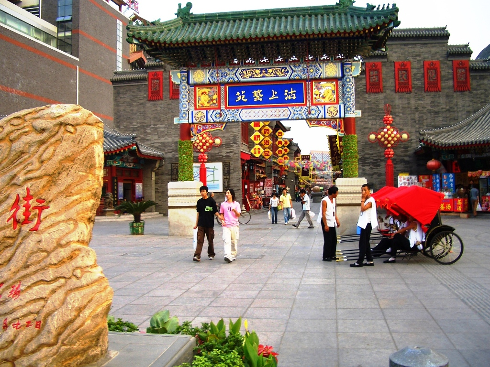
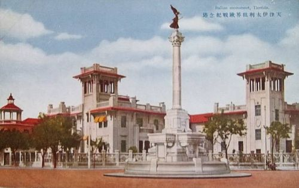
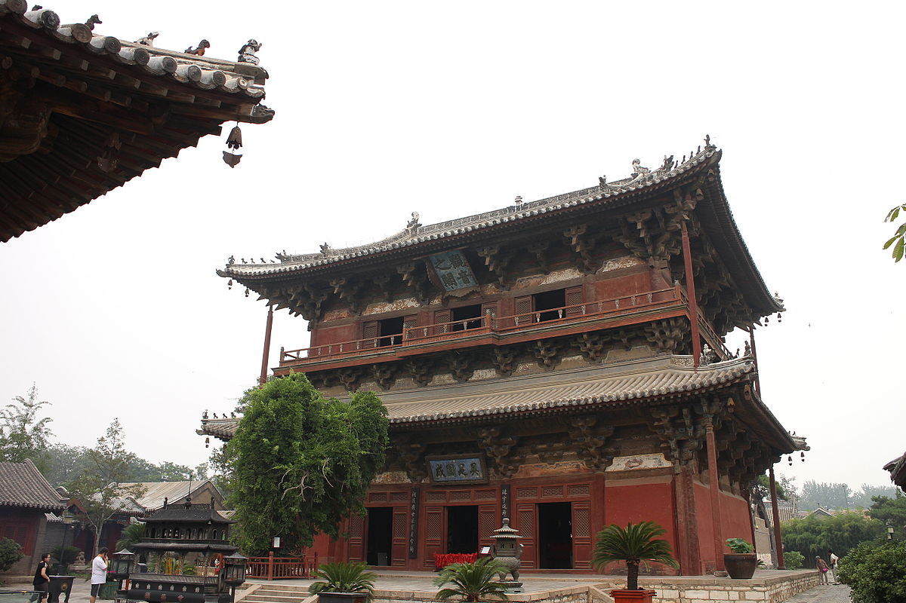

Ancient Culture Street is Tianjin’s most famous historic pedestrian street, stretching 600 meters along the Haihe River. Built in traditional “Qing Dynasty style” (red pillars, curved roofs, wooden signs), it’s designed to replicate Tianjin’s old commercial district. The star attraction is Tianhou Palace, a 700-year-old temple dedicated to Mazu (the sea goddess)—locals once prayed here for safe sea voyages, and it still hosts traditional ceremonies during festivals. The street is also lined with shops selling Tianjin specialties: clay figurines, paper cuts, and “Yangliuqing” New Year paintings (colorful folk art).
Spring (March–May): Mild (10–18°C), fewer crowds; cherry blossoms bloom near the river.
Autumn (Sept–Nov): Cool (12–20°C), perfect for strolling; street lanterns are lit in the evening.
Avoid summer afternoons (hot and crowded); visit 9–11 AM or 3–5 PM.
Free entry to the street; Tianhou Palace: 10 CNY/adult, 5 CNY/students, free for kids under 1.2m.

The Italian Concession Area (active 1901–1943) is a 2.8-square-kilometer neighborhood with over 200 European-style buildings—one of the largest and best-preserved foreign concession areas in China. Its center is Marco Polo Square, where a white marble fountain (modeled after Rome’s Trevi Fountain) stands surrounded by red-brick villas. Key spots include the Former Italian Consulate (a grand neoclassical building) and the “First Avenue” (lined with cafes, wine bars, and boutique shops). It’s a popular spot for photos, especially in spring when wisteria blooms climb the villa walls.
Spring (April–May): Wisteria and roses bloom, 12–20°C.
Autumn (Oct–November): Golden leaves, 10–18°C; great for outdoor dining.
Evening (6–8 PM): Buildings are lit up—romantic for couples or casual walks.
Free to walk the area; Tianjin Concession Museum: 15 CNY/adult, 8 CNY/students.

Dule Temple, located 12 kilometers northwest of Tianjin’s city center, is one of China’s oldest and best-preserved Buddhist temples (built in 984 AD during the Liao Dynasty). Its main hall, the “Great Buddha Hall,” houses a 10.3-meter-tall wooden statue of Guanyin (the Goddess of Mercy)—one of the largest ancient wooden Buddha statues in China. The temple’s architecture is a marvel: the main hall has a single-story exterior but a hidden second floor (used to maintain the statue), and its wooden structure uses no nails, a testament to Liao Dynasty engineering. The temple grounds are quiet, with ancient pine trees and stone tablets carved with calligraphy.
Spring (April–May): Temple gardens bloom with peonies, 10–18°C.
Autumn (Sept–October): Cool weather, 12–20°C; fewer crowds than summer.
Avoid rainy days—the wooden structure is best visited in dry weather.
40 CNY/adult, 20 CNY/students, free for kids under 1.2m.
Guide service: 100–150 CNY/1.5h (negotiable for small groups).